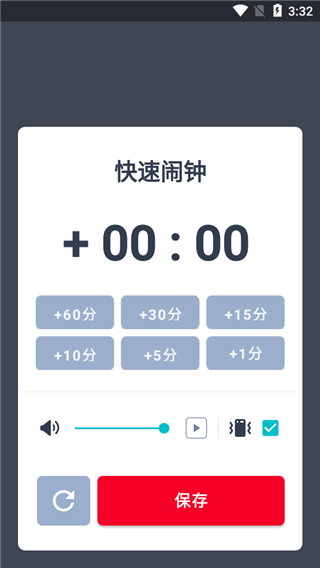

Alarmy 这十年：从一个"暴力闹钟"到睡眠生态的进化史
我是跟着 Alarmy 从初代用到现在的老用户，这款闹钟 App 的迭代路线比想象中有意思得多——它从一个简单粗暴的"让你不得不起床"的工具，慢慢长成了一个关涉睡眠质量的完整生态。
开篇：现在这版 Alarmy 是什么样
我最近打开 Alarmy 的时候愣了一下——它已经不只是当初那个"数学题+摇晃"的起床工具了。最新版本的主界面里，睡眠追踪的数据卡片占据了半壁江山，鼾声检测的折线图安静地躺在闹钟列表下方，而那个我熟悉了很多年的"起床任务"区域，已经从 8 种扩展到了十几种，甚至支持最多 5 个任务串联成一条"起床流水线"。
这种变化不是一夜之间发生的。我从 2016 年左右开始用 Alarmy，那时候它还是 Google Play 上一个不起眼的小应用，图标是个愤怒的红喇叭。回头看这十年的迭代，它的成长路线其实很有代表性——一个解决单点痛点的工具，怎么一步步变成一个有生态的产品。感兴趣的可以去 Alarmy官网 看看它现在的样子。

来路：从"暴力起床"到"睡眠关怀"
起步：解决一个真实的痛点
Alarmy 最早的版本非常纯粹——就是一个"你不可能关掉的闹钟"。创始人显然是个被赖床折磨得够呛的人，所以第一版就把所有能想到的"强制起床"手段都塞了进去：数学题、拍照任务、摇晃手机、二维码扫描。
那时候它的定位很清晰：给重度睡眠者的核武器。免费版就已经有 8 种任务可选，足够让任何一个"再睡五分钟"党彻底放弃抵抗。我记得第一次从 Alarmy下载 拿到免费版之后，设了一个 12 次的数学题，第二天早上做完题脑子已经完全清醒了——确实管用，但也确实有点反人类。
早期版本的界面也很简单，深色主题、大按钮、没有多余的东西。打开 App → 设时间 → 选任务 → 完成。整个流程不超过 30 秒。
第一次转向：为什么它开始关心你的睡眠
大概在 2018-2019 年间，Alarmy 做了一个我当时没太看懂的决定——加了睡眠追踪功能。
一个闹钟，为什么要管我睡了多久？
但用了一段时间我就明白了。很多时候你"起不来"不是因为闹钟不够狠，而是因为你前一晚根本没睡好。Alarmy 的团队显然意识到了这个问题：解决起床困难，光靠"暴力唤醒"是不够的，还得往上游走，看看睡眠本身出了什么问题。
早期的睡眠追踪很粗糙——只记录睡眠时长和几个阶段的大致分布。但它已经足够给我一些触动：有几次我以为自己睡了 8 个小时，结果数据显示深睡眠只有 40 分钟，难怪早上怎么都起不来。
Premium 订阅的出现：边界在哪里
睡眠追踪加进来之后不久，Alarmy 推出了 Premium 订阅。这也是它商业模式的一个重要转折点。
早期的 Alarmy 主要靠广告变现——免费版有底部横幅，体验一般但能忍。Premium 推出后，免费版保留了核心的起床任务（8 种），但把一些"进阶防护"功能锁了：防止关机、Extra Loud 突袭音量、防止凌晨改闹钟。还有身体类任务（深蹲、走路）和最多 5 个任务串联的权限。
我当时纠结了挺久要不要订阅。最后让我掏钱的是多任务串联——我想把"深蹲 + 拍照 + 打字"串起来，免费版最多只能串 2 个。但说实话，Premium 刚推出时的功能边界划得还算克制：核心的闹钟功能免费版都能用，付费买的是"更狠"和"更方便"。
打鼾检测：最让我意外的功能
如果说睡眠追踪是"往上游走"的第一步，那打鼾检测就是第二步——它开始关心你睡眠质量的细节，而不只是"你睡了多久"。
打鼾检测的原理说起来挺简单：麦克风实时监听 20-200Hz 的低频振动信号，匹配打鼾特征才会短暂录音，不是持续录制。但真正让我觉得有意思的是它的报告设计——不只是一个指数，还有打鼾时长、强度分布、打鼾时段（是 REM 睡眠多还是深睡眠多）。我第一次看到自己的打鼾报告时才知道，我周末的打鼾指数是工作日的两倍——原因不用想也知道。
鼾声录制是 Premium 专属功能，我订了一年 Premium 之后体验了一下。说实话听自己打鼾的声音有点尴尬，但确实直观。更重要的是，如果你发现自己打鼾严重 + 白天总是犯困，它会主动提示你可能有睡眠呼吸暂停的风险——这是从"工具"到"关怀"的一个很实在的跨越。
备份与同步：一个被低估的刚需
还有一个我以前没太在意、直到换手机时才惊觉重要的功能——闹钟数据备份。
免费版没有云端同步，只能手动截图或者导出内部存储目录。Premium 支持云端账号同步，闹钟配置、拍照参考图、家中物品库、睡眠历史数据都会跟着账号走。我去年换手机时，旧手机 Premium 账号登录新手机，等了大概 10 秒所有闹钟就恢复了——包括我花了半小时配的"深蹲 + 拍照 + 打字"三重串联闹钟。
这个功能的迭代其实也反映了 Alarmy 的一个产品理念：它知道你在它身上花了时间配置，所以它不想让你丢失这些配置。早期版本确实没考虑这个——数据只存在本地，卸载就清空。后来版本逐步完善了手动备份，再后来 Premium 上了云端同步。这是一个典型的"用户真的需要但早期没意识到"的功能。
规律：从迭代节奏看团队的优先级
回过头看这十年，Alarmy 的迭代有个很清晰的主线：
第一阶段（2016-2018）：死磕"起床"这件事。 不断加新的起床任务类型，优化任务难度调节，打磨多任务串联的体验。这是它的核心护城河——市面上至今没有任何一个闹钟 App 在"让你不得不起床"这件事上做得比它更极端。
第二阶段（2018-2020）：往上游走，进入睡眠领域。 睡眠追踪、打鼾检测、助眠音效——它开始回答"为什么你起不来"这个更根本的问题。
第三阶段（2020-至今）：补全生态的配套功能。 云端同步、数据备份、Premium 功能扩展、更多的铃声和音效选择。这一阶段的变化没有前两阶段那么"革命性"，但每一步都在让这个产品变得更"完整"。
它一直没做的事
观察一个产品，不仅要看它做了什么，还要看它一直没做什么。
Alarmy 至今没有社交功能。没有好友排行、没有打卡分享、没有社区。它就是一个安静的工具——你自己用，数据自己看，不打扰也不互动。
它也没做智能闹钟（根据你的睡眠阶段选择最佳唤醒时间那种）。虽然睡眠追踪数据已经足够支撑这个功能，但它始终没上。我的猜测是——它的团队很清楚自己的核心竞争力在哪里。智能闹钟是另一条赛道，而 Alarmy 想守住的是"起床"这个最后一公里。
跨平台同步也是一个明显的缺口。Android 和 iOS 之间的闹钟配置无法互传，Premium 订阅也不支持跨平台转移。Alarmy文档里提到这一点时用了"最麻烦的情况"来形容——说明团队也知道这是个痛点，但迟迟没动手。可能是因为两边的应用商店规则不统一，也可能是优先级确实没排到前面。
预判：照这个路线，下一步大概率走向哪里
从迭代规律推的话，我觉得有几个方向值得留意：
第一，睡眠追踪和打鼾检测的联动会越来越深。现在打鼾检测还是睡眠追踪下的一个子功能，但两者的数据其实可以做更有价值的关联——比如打鼾严重的日子第二天早晨应该推荐更温和的起床任务，或者睡眠质量差时自动推迟闹钟。文档里已经暗示了这种可能性，只是还没落地。
第二，AI 可能会进来。不是那种很花哨的 AI，而是帮你分析睡眠数据、给你起床上的个性化建议。Alarmy 目前的睡眠报告还是偏"数据展示"，如果能进一步做"数据分析"——比如"你连续 5 天深睡眠不足，建议提前半小时入睡"——价值会更高。
第三，跨平台同步大概率会解决。这个痛点已经存在很多年了，文档里都专门写了一节来说明 Android 和 iPhone 之间迁移的麻烦。当一个产品的用户基数足够大时，跨平台体验就会从"nice to have"变成"must have"。
当然这些都只是我从迭代规律推的，不当官方口径传。Alarmy 团队的节奏一直很稳，每一步都不是跟风做出来的。也许他们下一步想的事情，比我能想到的要更有趣。
收尾
我用过很多闹钟 App。从系统自带的，到各种花哨的"温柔唤醒"类，再回到 Alarmy。每一个阶段我都觉得"这次应该够了"，但 Alarmy 总能在下一个版本里让我发现——原来闹钟还能这么做。
它不是最好看的 App，也不是最轻量的，但它是最懂"起床困难"这件事本身的 App。从暴力到关怀，从工具到生态，这条路它走了十年，而且明显还没走完。

这套关于 Alarmy 的资料我同步整理在几个代码仓库里了，GitHub 上可以直接浏览完整的文档目录，Gitee 适合国内网络环境下查看，GitCode 那边做了镜像备份方便不同平台的用户访问。